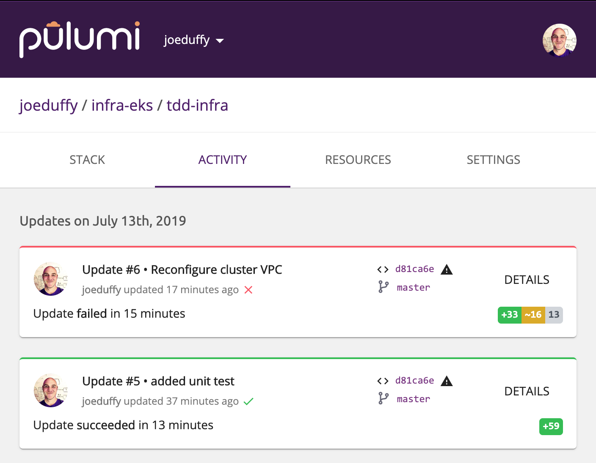
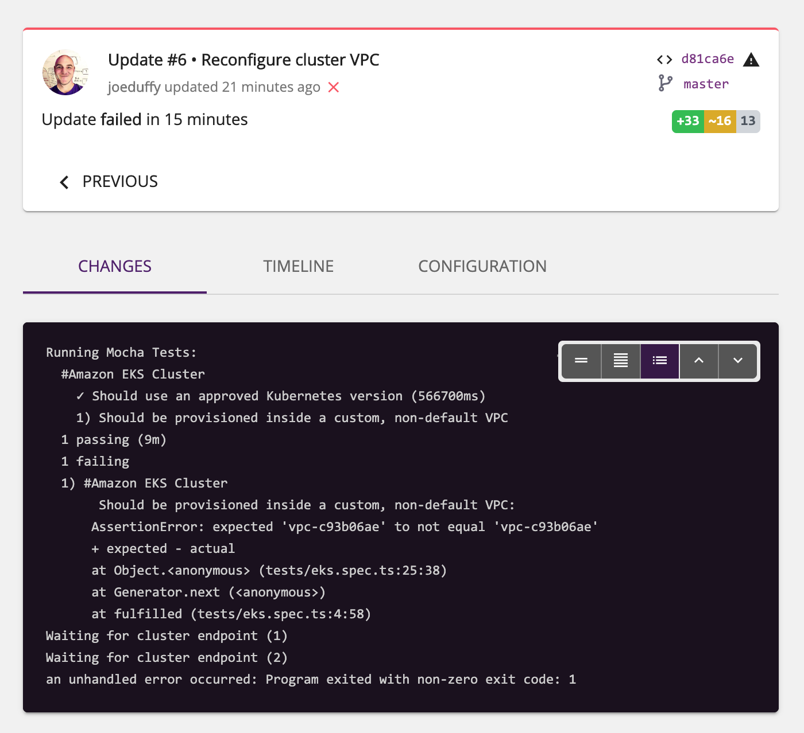

Unit Testing Your Infrastructure with Node.js and Mocha

Testing your infrastructure using familiar tools like Node.js’s Mocha framework allows you to ensure configuration is correct before provisioning, and that the resulting infrastructure has certain desirable properties afterwards. This can enforce team standards, ensure security guidelines are being followed, and so much more. Because Pulumi uses general purpose languages, you can just embed tests alongside your infrastructure-as-code definitions themselves, using a familiar authoring style and reporting experience. In this post, we’ll explore the ins and outs of unit testing your infrastructure.
Test-Driven Infrastructure
We previously explored many reasons and solutions for testing your infrastructure. In this post, we’ll see a very simple approach that leverages existing test tools and frameworks. For this blog post, we’ll be using Node.js with TypeScript, the Mocha test framework, and the Chai assertion library.
Our example will be testing two things about an Amazon EKS cluster; that it is
- Running Kubernetes version 1.13.
- Provisioned inside a private VPC, rather than the default one.
In true test-driven development (TDD) form, let’s start with the tests themselves. If you’re familiar with Mocha and Chai, this should look like ordinary testing to you. If you’re not familiar with them, don’t worry – they are quite easy to read and learn: Mocha and Chai.
Here is the contents of our tests/eks.spec.ts test file:
import * as aws from "@pulumi/aws";
import { expect } from "chai";
import * as pulumi from "@pulumi/pulumi";
import { promise } from "./";
import { cluster } from "../";
describe("#Amazon EKS Cluster", () => {
it("Should use an approved Kubernetes version", async () => {
const version = await promise(cluster.eksCluster.version);
expect(version).to.equal("1.13");
});
it("Should be provisioned inside a custom, non-default VPC", async () => {
const vpcId = await promise(cluster.core.vpcId);
if (vpcId) {
const defaultVpc = await aws.ec2.getVpc({ default: true });
expect(vpcId).not.equals(defaultVpc.id);
} else if (pulumi.runtime.isDryRun()) {
pulumi.log.warn("Skipped VPC ID check: not known during preview -- will test after apply");
} else {
throw new Error("VPC unknown during deployment");
}
});
});This code does a few things worth describing. First, it imports all the packages
that we’re going to use. Notably, this includes the normal Chai package for assertions,
the AWS and Pulumi SDK packages, the EKS cluster provisioned by this project itself,
and a utility function promise that we’ll dive into momentarily. Then it simply uses
the Mocha functions describe and it to register test cases that will be run.
The version test fetches a property from our EKS cluster, cluster.eksCluster.version,
and then uses the Chai assertion expect(version).to.equal("1.13"). This will fail the
test if the version is anything but 1.13 (including if it is unknown).
The VPC test is slightly more complex. For the most part, it is simply checking the
cluster.core.vpcId property and ensuring it doesn’t equal the default VPC ID, which
we fetch with aws.ec2.getVpc. However, because we might be creating the custom VPC in the
program itself, it’s possible we won’t know the ID during previews. (A preview is when
Pulumi shows you a dry-run of your deployment without actually doing it yet.) That’s why
we check pulumi.runtime.isDryRun and let things slide, with a little warning message.
We could always be conservative and fail the test, but in this case, we’ll actually permit the
deployment to proceed – but ensure we check it afterwards. This means we might fail the
test after the bad cluster has been deployed, but that’s better than not checking at all.
Our Base (Failing) Program
Here is the program we’ll be testing. Keeping with our TDD theme, let’s start with the tests failing to begin with (we are using the default VPC and not specifying a version):
import * as eks from "@pulumi/eks";
// Create a basic EKS cluster.
export const cluster = new eks.Cluster("my-cluster", {
desiredCapacity: 2,
minSize: 1,
maxSize: 2,
storageClasses: "gp2",
deployDashboard: false,
});If you want to create a fresh Pulumi project and follow along, simply install the CLI, ensure it is configured for your AWS account, and run
pulumi new aws-typescriptto create an empty project. Swap out the contents ofindex.tswith the above.
Before we add our tests, we can run a pulumi preview and all will work just fine:
$ pulumi preview
Previewing update (tdd-infra):
Type Name Plan
+ pulumi:pulumi:Stack infra-eks-tdd-infra create
+ └─ eks:index:Cluster my-cluster create
+ ├─ eks:index:ServiceRole my-cluster-eksRole create
+ │ ├─ aws:iam:Role my-cluster-eksRole-role create
+ │ ├─ aws:iam:RolePolicyAttachment my-cluster-eksRole-90eb1c99 create
+ │ └─ aws:iam:RolePolicyAttachment my-cluster-eksRole-4b490823 create
+ ├─ eks:index:ServiceRole my-cluster-instanceRole create
+ │ ├─ aws:iam:Role my-cluster-instanceRole-role create
+ │ ├─ aws:iam:RolePolicyAttachment my-cluster-instanceRole-03516f97 create
+ │ ├─ aws:iam:RolePolicyAttachment my-cluster-instanceRole-e1b295bd create
+ │ └─ aws:iam:RolePolicyAttachment my-cluster-instanceRole-3eb088f2 create
+ ├─ pulumi-nodejs:dynamic:Resource my-cluster-cfnStackName create
+ ├─ aws:iam:InstanceProfile my-cluster-instanceProfile create
+ ├─ aws:ec2:SecurityGroup my-cluster-eksClusterSecurityGroup create
+ ├─ aws:ec2:SecurityGroupRule my-cluster-eksClusterInternetEgressRule create
+ ├─ aws:eks:Cluster my-cluster-eksCluster create
+ ├─ pulumi:providers:kubernetes my-cluster-eks-k8s create
+ ├─ pulumi-nodejs:dynamic:Resource my-cluster-vpc-cni create
+ ├─ kubernetes:core:ConfigMap my-cluster-nodeAccess create
+ ├─ aws:ec2:SecurityGroup my-cluster-nodeSecurityGroup create
+ ├─ kubernetes:storage.k8s.io:StorageClass my-cluster-gp2 create
+ ├─ aws:ec2:SecurityGroupRule my-cluster-eksExtApiServerClusterIngressRule create
+ ├─ aws:ec2:SecurityGroupRule my-cluster-eksClusterIngressRule create
+ ├─ aws:ec2:SecurityGroupRule my-cluster-eksNodeIngressRule create
+ ├─ aws:ec2:SecurityGroupRule my-cluster-eksNodeInternetEgressRule create
+ ├─ aws:ec2:SecurityGroupRule my-cluster-eksNodeClusterIngressRule create
+ ├─ aws:ec2:LaunchConfiguration my-cluster-nodeLaunchConfiguration create
+ ├─ aws:cloudformation:Stack my-cluster-nodes create
+ └─ pulumi:providers:kubernetes my-cluster-provider create
Resources:
+ 29 to createAs usual, this shows us all of the resources that Pulumi would provision were we to proceed with a deployment. No tests yet, however.
Adding the Test Harness Boilerplate
Now let’s hook up the tests so they run anytime we do a pulumi preview or pulumi up.
Note that we won’t be running these tests using the mocha CLI. Instead, we will
run Mocha programmatically.
This lets us run the tests inside of our Pulumi program where all of the necessary functionality
is available. It also automatically coordinates test execution with previews and updates.
First, create a test file, tests/index.ts, that runs Mocha. This is basic boilerplate that
registers all of the test files in the tests/ directory and will work for any project:
import * as fs from "fs";
import * as Mocha from "mocha";
import * as path from "path";
import * as pulumi from "@pulumi/pulumi";
// runTests executes all test files (*.ts) in the current directory.
export function runTests() {
// Create a new Mocha test runner (with a long timeout).
const mocha = new Mocha({ timeout: 1000*60*30 });
// Only keep the .ts files, and skip this file (index.ts).
const testDir = __dirname;
fs.readdirSync(testDir).
filter(file => file.endsWith(".ts") && file !== "index.ts").
forEach(file => { mocha.addFile(path.join(testDir, file)); });
// Now actually run the tests with the desired reporter.
console.log(`Running Mocha Tests: ${mocha.files}`);
mocha.reporter("spec").run(failures => {
process.exitCode = failures ? 1 : 0;
});
}
// promise returns a resource output's value, even if it's undefined.
export function promise<T>(output: pulumi.Output<T>): Promise<T | undefined> {
return (output as any).promise() as Promise<T>;
}The runTests function creates an instance of the Mocha runner, registers all the test
files, configures the desired reporter, and runs the tests. We adjust the timeout to be
30 minutes, since provisioning things can take some time and we don’t want Mocha to
timeout. For complete information on the options available, see the Mocha documentation; effectively, if you
can do it with the mocha CLI, there is a way to do it using the API.
This file also defines the promise function used to access resource properties in our
tests. We’ll see why this is needed shortly.
Running the Tests
Now that we have runTests, let’s go back and add a call to it in our primary index.ts file.
First we need to import our custom function at the top of the file:
import { runTests } from "./tests";And now we’ll add a call to runTests at the very bottom of the file:
// Run deployment validation tests.
runTests();That’s it. Now when we run pulumi up, we will see that our tests are running!
$ pulumi up
Previewing update (tdd-infra):
Type Name Plan Info
+ pulumi:pulumi:Stack infra-eks-tdd-infra create 1 error; 19 messages
+ └─ eks:index:Cluster my-cluster create
+ ├─ eks:index:ServiceRole my-cluster-eksRole create
+ │ ├─ aws:iam:Role my-cluster-eksRole-role create
+ │ ├─ aws:iam:RolePolicyAttachment my-cluster-eksRole-4b490823 create
+ │ └─ aws:iam:RolePolicyAttachment my-cluster-eksRole-90eb1c99 create
+ ├─ eks:index:ServiceRole my-cluster-instanceRole create
+ │ ├─ aws:iam:Role my-cluster-instanceRole-role create
+ │ ├─ aws:iam:RolePolicyAttachment my-cluster-instanceRole-03516f97 create
+ │ ├─ aws:iam:RolePolicyAttachment my-cluster-instanceRole-e1b295bd create
+ │ └─ aws:iam:RolePolicyAttachment my-cluster-instanceRole-3eb088f2 create
+ ├─ pulumi-nodejs:dynamic:Resource my-cluster-cfnStackName create
+ ├─ aws:iam:InstanceProfile my-cluster-instanceProfile create
+ ├─ aws:ec2:SecurityGroup my-cluster-eksClusterSecurityGroup create
+ ├─ aws:ec2:SecurityGroupRule my-cluster-eksClusterInternetEgressRule create
+ ├─ aws:eks:Cluster my-cluster-eksCluster create
+ ├─ pulumi:providers:kubernetes my-cluster-eks-k8s create
+ ├─ aws:ec2:SecurityGroup my-cluster-nodeSecurityGroup create
+ ├─ kubernetes:core:ConfigMap my-cluster-nodeAccess create
+ ├─ kubernetes:storage.k8s.io:StorageClass my-cluster-gp2 create
+ ├─ pulumi-nodejs:dynamic:Resource my-cluster-vpc-cni create
+ ├─ aws:ec2:SecurityGroupRule my-cluster-eksClusterIngressRule create
+ ├─ aws:ec2:SecurityGroupRule my-cluster-eksNodeClusterIngressRule create
+ ├─ aws:ec2:SecurityGroupRule my-cluster-eksNodeInternetEgressRule create
+ ├─ aws:ec2:SecurityGroupRule my-cluster-eksNodeIngressRule create
+ ├─ aws:ec2:SecurityGroupRule my-cluster-eksExtApiServerClusterIngressRule create
+ ├─ aws:ec2:LaunchConfiguration my-cluster-nodeLaunchConfiguration create
+ ├─ aws:cloudformation:Stack my-cluster-nodes create
+ └─ pulumi:providers:kubernetes my-cluster-provider create
Diagnostics:
pulumi:pulumi:Stack (infra-eks-tdd-infra):
Running Mocha Tests: infra-eks/tests/eks.spec.ts
#Amazon EKS Cluster
1) Should use an approved Kubernetes version
2) Should be provisioned inside a custom, non-default VPC
0 passing (9s)
2 failing
1) #Amazon EKS Cluster
Should use an approved Kubernetes version:
AssertionError: expected undefined to equal '1.13'
at Object.<anonymous> (tests/eks.spec.ts:19:35)
at Generator.next (<anonymous>)
at fulfilled (tests/eks.spec.ts:4:58)
2) #Amazon EKS Cluster
Should be provisioned inside a custom, non-default VPC:
AssertionError: expected 'vpc-c93b06ae' to not equal 'vpc-c93b06ae'
+ expected - actual
at Object.<anonymous> (tests/eks.spec.ts:25:38)
at Generator.next (<anonymous>)
at fulfilled (tests/eks.spec.ts:4:58)
error: an unhandled error occurred: Program exited with non-zero exit code: 1As expected, our tests fail for two reasons:
- The Kubernetes version is
undefinedand not1.13. - The VPC ID is equal to the default VPC, since the EKS cluster uses that by default.
Fixing Our Program
Now let’s refactor our infrastructure so the tests start passing.
To fix the first problem, we simply need to pass the Kubernetes version explicitly when creating our cluster. That’s as simple as passing a new argument:
export const cluster = new eks.Cluster("my-cluster", {
...
version: "1.13",
});Note that we could have done what we did with the VPC ID, and change the test to verify
that the version is correct after provisioning. It turns out that at the time of this
writing, the default version is in fact 1.13, so our test would then pass. But we’d
be depending on a brittle default that could change at any moment – so it’s probably
better for us to be explicit about this!
If we rerun pulumi up, we’ll see that this test now passes – huzzah:
Diagnostics:
pulumi:pulumi:Stack (infra-eks-tdd-infra):
Running Mocha Tests: infra-eks/tests/eks.spec.ts
#Amazon EKS Cluster
✓ Should use an approved Kubernetes version (3704ms)
1) Should be provisioned inside a custom, non-default VPC
1 passing (4s)
1 failing
1) #Amazon EKS Cluster
Should be provisioned inside a custom, non-default VPC:
AssertionError: expected 'vpc-c93b06ae' to not equal 'vpc-c93b06ae'
+ expected - actual
at Object.<anonymous> (tests/eks.spec.ts:25:38)
at Generator.next (<anonymous>)
at fulfilled (tests/eks.spec.ts:4:58)
error: an unhandled error occurred: Program exited with non-zero exit code: 1But the VPC test still fails. Let’s fix that one by creating a custom VPC – the
awsx.ec2.Vpc component makes this easy – and then passing its resulting ID and
subnet IDs as arguments.
const vpc = new awsx.ec2.Vpc("my-vpc");
export const cluster = new eks.Cluster("my-cluster", {
vpcId: vpc.id,
subnetIds: vpc.publicSubnetIds,
...
});For reference, here is the complete corrected index.ts file we have now:
import * as awsx from "@pulumi/awsx";
import * as eks from "@pulumi/eks";
import { runTests } from './tests';
// Create a basic EKS cluster.
const vpc = new awsx.ec2.Vpc("my-vpc");
export const cluster = new eks.Cluster("my-cluster", {
vpcId: vpc.id,
subnetIds: vpc.publicSubnetIds,
desiredCapacity: 2,
minSize: 1,
maxSize: 2,
storageClasses: "gp2",
deployDashboard: false,
version: "1.13",
});
// Run deployment validation.
runTests();Now if we rerun pulumi up, we will see that the tests pass during the preview,
landing us at the prompt asking us whether to deploy our infrastructure:
$ pulumi up
Previewing update (tdd-infra):
Type Name Plan
+ pulumi:pulumi:Stack infra-eks-tdd-infra create
+ ├─ awsx:x:ec2:Vpc my-vpc create
...
+ └─ eks:index:Cluster my-cluster create
...
Diagnostics:
pulumi:pulumi:Stack (infra-eks-tdd-infra):
Running Mocha Tests: infra-eks/tests/eks.spec.ts
#Amazon EKS Cluster
✓ Should use an approved Kubernetes version (839ms)
✓ Should be provisioned inside a custom, non-default VPC
2 passing (928ms)
warning: Skipped VPC ID check: not known during preview -- will test after apply
Resources:
+ 59 to create
Do you want to perform this update?
yes
> no
detailsThey passed! Notice, however, that the VPC test was skipped. That’s because we can’t know whether the resulting ID is going to end up resolving to the default VPC or not. There are myriad ways that the program could have supplied the ID, including by querying and looking up the default VPC ID dynamically and passing it as an argument.
If we choose yes and deploy the changes, we will a more confidently passing test:
Updating (tdd-infra):
Type Name Status
+ pulumi:pulumi:Stack infra-eks-tdd-infra created
+ ├─ awsx:x:ec2:Vpc my-vpc created
...
+ └─ eks:index:Cluster my-cluster created
...
Diagnostics:
pulumi:pulumi:Stack (infra-eks-tdd-infra):
Running Mocha Tests: infra-eks/tests/eks.spec.ts
#Amazon EKS Cluster
✓ Should use an approved Kubernetes version (666477ms)
✓ Should be provisioned inside a custom, non-default VPC (917ms)
2 passing (11m)
Resources:
+ 59 created
Duration: 12m40sVoila! A successfully stood up EKS cluster, with built-in TDD security safeguards.
Keeping Track of Failures
Anytime we try to deploy a program that fails, Pulumi is keeping a record of it.
For instance, let’s say somehow the VPC wasn’t known at preview time, and ended up resolving to the default VPC. Even though the deployment occurred, we’d want to know that we now have an issue that we need to go track down.
We can very clearly see such failures on the Pulumi SaaS console:

And if we click into it, we’ll see the complete Mocha test output:

We could even use webhooks to fire off a Slack alarm so that nobody misses the issue. This is often very helpful in unattended scenarios, like continuous deployment.
Better to catch these things late than never!
About Resource Properties and Outputs
A brief aside on resource properties is worthwhile, because they are “special” in some important ways when writing test cases.
All properties on resources are of type Output<T>. This behaves a lot like a promise,
in that the value isn’t readily available to your program. Instead, you use the apply
function to get at it, and Pulumi calls this when your resource’s properties are known.
Sometimes, however, properties cannot be known. A good example is the VPC ID we’re using above. Amazon will automatically assign a VPC ID when the resource is provisioned. That means that during previews, we won’t actually have a known value – it doesn’t even exist yet! We somehow need a way to deal with these situations.
The Output<T>.apply function tries to shield you from these circumstances. It would
be maddening to need to check inside of these functions whether a value is known or not,
and then you’d have all sorts of conditional code that differs between previews and updates –
generally an anti-pattern, because the entire point of a preview is to show you exactly
what will be done during an update. Any differences run the risk of showing different results.
Tests are special, however, in that you will need to think about what tests make sense to run before an update, versus those that should run after an update.
That’s why we need the promise<T> function defined earlier. It uses an internal
promise() property to get at the raw underlying promise for any resource property,
and returns it so you can either await it or call then in the usual promise ways.
This does mean we aren’t hidden from the details of whether a preview is running or not.
This function, or functionality like it, will be made available as an official SDK feature as soon as pulumi/pulumi#2287 has been resolved.
By using this function in our tests, we have the following cases to consider:
- The value is known, which could be due to the following cases
- It was explicitly supplied in our program
- It was a default populated by the underlying resource provider during a preview
- We are doing an update and the full outputs are available
- The value is
undefined, which could be due to the following cases- We are in a preview and the value hasn’t been computed yet
- We have done an update and the property was not made available as an output value
In all cases, the pulumi.runtime.isDryRun function will return true during a preview.
In general, it’s easiest to write tests that just run at deployment time, rather than during a preview, when all of these different states are possible. That has the downside to not catching problems before they get deployed, however. As with many things, this is a tradeoff.
For a more complete overview of Output<T>, please see the
Pulumi Programming Model documentation.
Next Steps
In this post, we’ve seen how to test your infrastructure using familiar test driven development (TDD) techniques and frameworks like Node.js’s Mocha and Chai libraries. This is a powerful capability that builds atop Pulumi’s use of general purpose languages, letting you apply existing software development best practices to your infrastructure.
Although we’ve just scratched the surface with our EKS cluster example, this capability can be used to enforce a wide array of team standards, best practices, and security guidelines. If you can express it in your favorite test framework, you can check it!
Everything we’ve seen in this article is open source and free to use – give Pulumi a try today.
Posted on